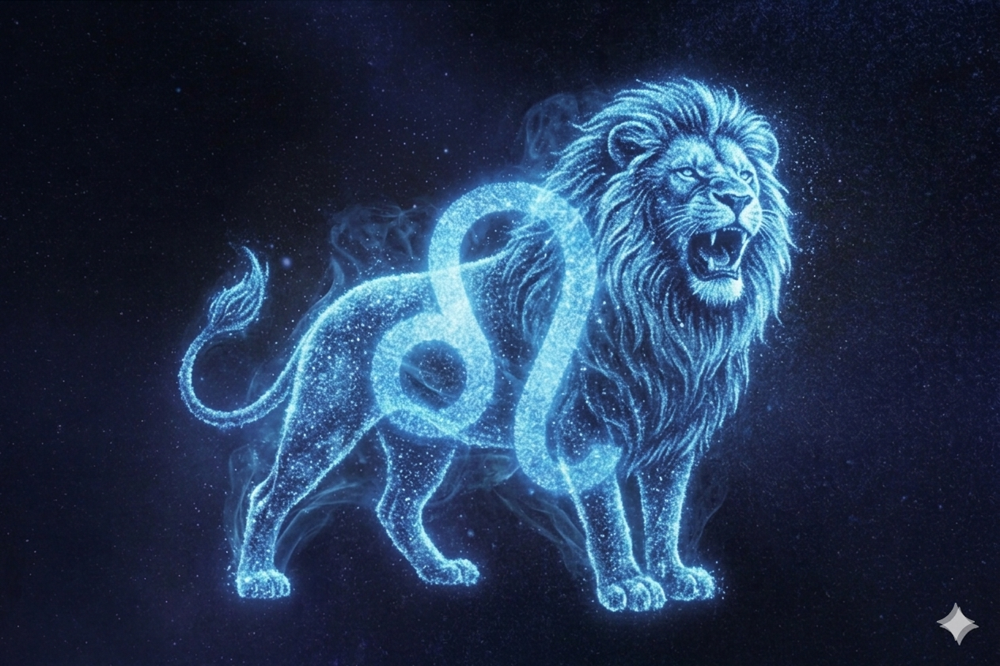

Leão

O signo de Leão é o quinto do zodíaco e está associado à liderança, confiança e criatividade.
Regido pelo Sol, Leão tem forte ligação com brilho, energia e expressão pessoal.
Pessoas leoninas costumam ser carismáticas, determinadas e gostam de estar em destaque, demonstrando segurança e entusiasmo em tudo que fazem.
Por outro lado, podem ser orgulhosas, teimosas e buscar muita atenção ou reconhecimento.
Leão é um signo de elemento fogo, o que reforça sua intensidade, paixão e espírito vibrante.
Em resumo, leoninos são conhecidos por sua presença marcante, generosidade e grande força de vontade.